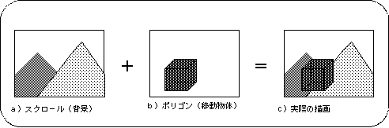
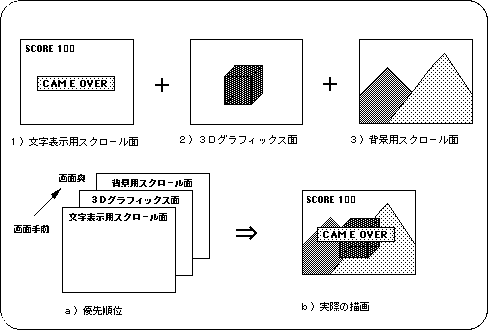

Return to previous page | Return to menu ｜ Go to next page
Scrolling refers to 2D graphics used mainly for game backgrounds and text display. There are other 2D graphics in SGL called sprites, but sprites are mainly used for moving objects and scrolls are used mainly for expressing static objects.

Note) In this example, the scroll is displayed behind the polygon plane.
In SGL, multiple scroll planes can be displayed in a single screen. This makes it possible to draw, for example, a scroll surface for displaying characters on the front, a polygon surface between them, and a background scroll surface on the back.
Such drawing priority is called priority, and drawing priority can be set for each display surface of scroll, sprite, and polygon. (For details on priority, see “8-11: Priority”.) ).
